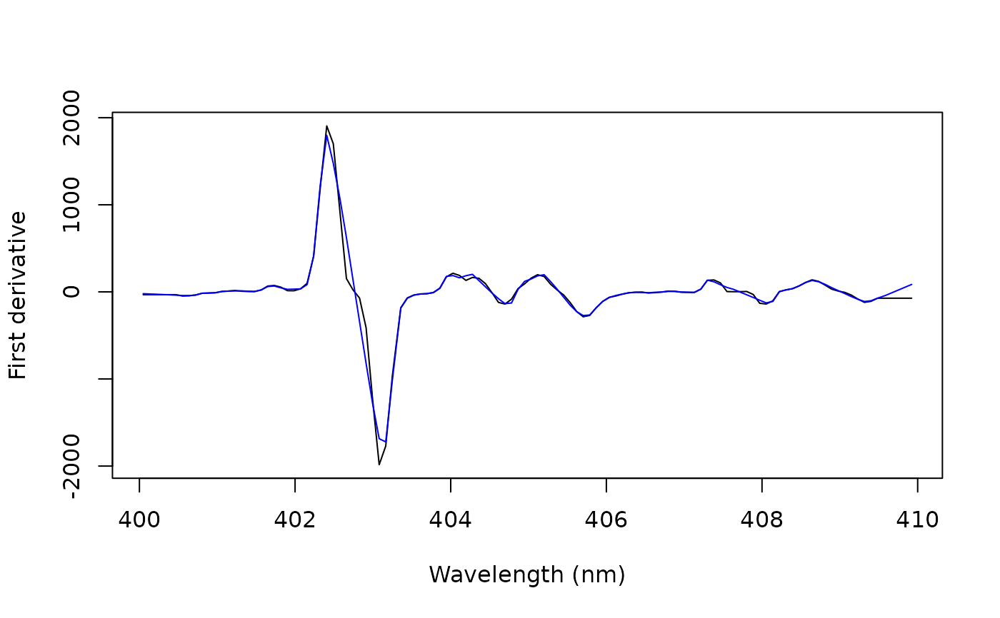

Computes the first or second derivative of spectra by the gap-segment
(Norris-Williams) method: the spectrum is averaged over segments of
segment channels, and the derivative is the difference between segments
separated by gap channels.
Arguments
- x
A numeric matrix or data frame of spectra, one per row, or a numeric vector (one spectrum). Their names are the wavelengths.
- derivative
The derivative: 1 (default) or 2.
- gap
The number of channels between two segments, an odd number. Default is 5.
- segment
The number of channels averaged in each segment, an odd number. Default is 3.
- segments
A logical: filter the segments between gaps of the wavelength axis separately (
TRUE, default). Needs wavelengths as names.
Details
The first derivative at a channel is the mean of a segment after it minus
the mean of a segment before it, the gap channels between the two
segments being centered on the channel, divided by the distance between
the centers of the segments (segment + gap channels). The second
derivative combines three segments separated by gap channels, the
middle one centered on the channel: the mean of the first, minus twice
the mean of the middle one, plus the mean of the last, divided by the
squared distance between the centers. The filter thus spans
2 * segment + gap channels (first derivative) or
3 * segment + 2 * gap channels (second derivative).
Averaging over a segment smooths the spectrum, and the gap sets the
distance over which the difference is taken: unlike the window of
savitzky_golay(), which sets both, the two can be chosen separately.
With segment = 1, there is no smoothing (Norris gap derivative). A
first derivative removes a constant offset, and a second derivative a
straight baseline; a curved background, such as the continuum of a LIBS
plasma, is reduced but not removed (see baseline_als()). Emission lines
are only a few channels wide in LIBS spectra: a gap or segment wider than
a line merges it with its neighbors, which matters for measuring lines
more than for multivariate models of whole spectra.
The derivatives are exact for straight lines (first derivative) and
parabolas (second derivative), and per channel: for derivatives per nm,
divide the first derivative by the channel spacing (and the second by its
square). Programs count the gap in different ways: here it is the number
of channels between two segments, as the argument w of
prospectr::gapDer(). Norris and Williams (1984) gave the second
derivative the opposite sign.
Every channel is kept: the first and last channels, where the filter does
not fit, take the derivative of the nearest channel where it fits. When
segments = TRUE, the spectrum is split between the detectors of a
multi-spectrometer system (where the wavelengths step back, or jump by
more than 5 times the median spacing), and each segment is filtered on
its own; segments shorter than the filter are returned as NA, with a
warning.
References
Norris, K.H., Williams, P.C. (1984). Optimization of mathematical treatments of raw near-infrared signal in the measurement of protein in hard red spring wheat. I. Influence of particle size. Cereal Chemistry, 61(2):158-165.
Rinnan, A., van den Berg, F., Engelsen, S.B. (2009). Review of the most common pre-processing techniques for near-infrared spectra. Trends in Analytical Chemistry, 28(10):1201-1222.
Vrábel, J., Képeš, E., Duponchel, L., et al. (2020). Classification of challenging laser-induced breakdown spectroscopy soil sample data - EMSLIBS contest. Spectrochimica Acta Part B, 169:105872.
Examples
data(forageLIBS)
spectrum <- unlist(forageLIBS[1, -(1:14)])
wl <- as.numeric(names(spectrum))
keep <- wl > 400 & wl < 410
norris <- gap_derivative(spectrum[keep], gap = 5, segment = 3)
savgol <- savitzky_golay(spectrum[keep], window = 11, derivative = 1)
plot(wl[keep], norris, type = "l", xlab = "Wavelength (nm)",
ylab = "First derivative")
lines(wl[keep], savgol, col = "blue")
